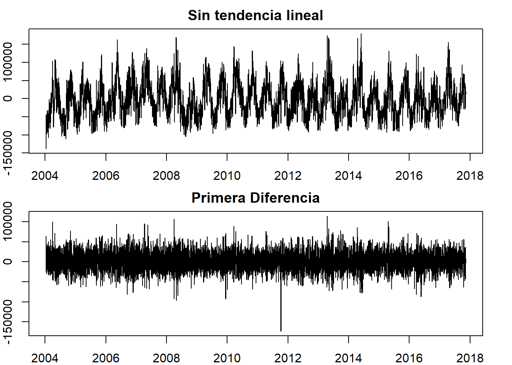

# Librerías necesarias
library(TSstudio)
library(readxl)
library(dplyr)
library(lubridate)
library(astsa)
library(feasts)
library(fable)
library(timetk)
library(tsibble)
library(zoo)
library(xts)
library(readxl)
library(tidyverse)
library(nonlinearTseries)
library(tseriesChaos)
library(forecast)
library(plotly)2 Análisis del consumo de energía de la empresa PJM
# Carga de la base de datos
AEP_hourly<-read.csv("AEP_hourly.csv")
AEP_hourly$Datetime<-as.POSIXct(AEP_hourly$Datetime, format = "%Y-%m-%d %H:%M:%S")
AEP_hourly$fecha<-as.Date(AEP_hourly$Datetime)
energia <- AEP_hourly %>%
group_by(fecha) %>%
summarise(Energia = sum(AEP_MW))
energia<-energia[-5055,]
energia2<-ts(energia$Energia,start=c(2004,10,01),frequency=365.25)Según lo observado en la serie de tiempo (Figura 2.1), visualmente se tiene:
# Gráfico de la serie de tiempo
energia2<-ts(energia$Energia,start=c(2004,10,01),frequency=365.25)
plot(energia2, main="Serie de tiempo de la energía diaria de una empresa estadounidense",
cex.main=1,
xlab="Tiempo ",
ylab="Energía consumida",
cex.lab=0.4)
- Heterocedasticidad marginal: Se puede observar que la varianza de cada instante en la serie es casi la misma. Al parecer no es necesario estabilizar la varianza.
- Tendencia: A simple vista se observa que, a medida que pasa el tiempo la serie oscila al rededor del mismo valor, por lo tanto, no es necesario estimar la tendencia.
- Componente estacional: Se observan algunos patrones que se repiten con cierta periodicidad, lo cual hace que sea necesario observar la posible presencia de componente estacional y posteriormente estimarla.
2.1 Estabilización de la varianza marginal
Como se observa en la gráfica de la serie de tiempo no es necesario realizar una estabilización de la varianza para continuar con el análisis descriptivo, sin embargo, para comprobar esto, se hace una transformación de Box-cox para ver que tanto se estabiliza la varianza. En la Figura 2.2 se observa que se sugiere una transformación dado que 1 no está contenido en el intervalo.
MASS::boxcox(lm(energia2 ~ 1),seq(-5, 5, length = 50))
abline(v = 1, col = "red", lty = 2)En la siguiente salida se puede ver que el \(\lambda\) sugerido es \(-0.25\), como es un número negativo, se procede a hacer la transformación Box-Cox usando logaritmo natural.
forecast::BoxCox.lambda(energia2, method ="loglik",lower = -1, upper = 3)[1] -0.25En la Figura 2.3 a continuación se muestra que la serie en escala logarítmica nuevamente no tiene la varianza estabilizada, dado que no se contiene al 1.
lenergia2=log(energia2)
MASS::boxcox(lm(lenergia2 ~ 1),seq(-5, 5, length = 50))
abline(v = 1, col = "red", lty = 2)Además, se puede notar en la Figura 2.4 , que no hay una diferencia significativa entre la serie transformada y no transformada. Por lo que el análisis descriptivo se continúa usando los datos originales.
par(mar = c(1,1,1,1))
par(mfrow=c(2,1),mar=c(3,3,3,3))
plot(energia2,main="Serie energía sin Transformar",cex.main=1)
plot(lenergia2,main="Serie energía con Transformación BoxCox",cex.main=1)2.2 Estimación de la tendencia
Como se observa en la gráfica de la serie de tiempo no es necesario realizar una estimación de la tendencia para continuar con el análisis descriptivo, sin embargo, se hace una estimación preliminar usando varios métodos, con el fin de comprobar que la serie sin tendencia no varía mucho.
2.2.1 Tendencia lineal
# Creación del objeto tibble
energia_1=energia %>% map_df(rev)
Fechas=as.Date(energia_1$fecha)
energia_xts=xts(x = energia_1$Energia,frequency = 365.25,order.by = Fechas)
# Creación objeto tssible a partir del objeto tibble
df_energia=data.frame(Energia=energia_1$Energia,fecha=energia_1$fecha)
tbl_energia=tibble(df_energia)
tbl_energia_format_fecha=tbl_energia
tsbl_energia=as_tsibble(tbl_energia_format_fecha,index=fecha)En la siguiente salida se presenta el ajuste de una regresión lineal para estimar la tendencia. El \(R^2\) indíca qué tan bien se ajusta la recta a los datos, en este caso tiene un valor de \(0.058\), por lo que sugiere que no hay tendencia lineal.
# Análisis de tendencia con regresion simple
summary(fit_e<-lm(energia2~time(energia2),na.action=NULL))
Call:
lm(formula = energia2 ~ time(energia2), na.action = NULL)
Residuals:
Min 1Q Median 3Q Max
-137653 -34064 -5533 31129 179275
Coefficients:
Estimate Std. Error t value Pr(>|t|)
(Intercept) 6128528.2 325172.5 18.85 <2e-16 ***
time(energia2) -2862.7 161.7 -17.70 <2e-16 ***
---
Signif. codes: 0 '***' 0.001 '**' 0.01 '*' 0.05 '.' 0.1 ' ' 1
Residual standard error: 45920 on 5052 degrees of freedom
Multiple R-squared: 0.05841, Adjusted R-squared: 0.05823
F-statistic: 313.4 on 1 and 5052 DF, p-value: < 2.2e-16En la Figura 2.5 se presenta la serie de tiempo de la energía con la estimación lineal de la tendencia.
plot(energia2, main="Serie de tiempo de la energía diaria de una empresa estadounidense",
cex.main=1,
xlab="Tiempo ",
ylab="Energía consumida",
cex.lab=0.4)
abline(fit_e,col="darkcyan",lwd=2)
Posteriormente, se procede a eliminar la tendencia lineal, como se puede ver en la Figura 2.6 .
# Eliminación de la tendencia con la predicción la recta
ElimiTendenerg<-energia2-predict(fit_e)
plot(ElimiTendenerg,main="Serie energía sin tendencia",
cex.main=1.3,
xlab="Tiempo",
ylab="Consumo de energía",
cex.lab=0.4)2.2.2 Tendencia con promedios móviles
En la Figura 2.7 , se muestra un ajuste de la tendencia con promedios móviles, como se puede ver, aparentemente hay una sobrestimación de la tendencia, ya que muestra comportamientos que no son tan visibles en la serie de tiempo original.
# Descomposición filtro de promedios móviles
energia_decompo=decompose(energia2)
plot(energia_decompo)2.2.3 Tendencia con diferenciación
En la Figura 2.8 se presentan los gráficos de las series sin tendencia, estimada con regresión lineal y con diferenciación respectivamente, se puede notar que la serie sin tendencia estimada con diferenciación impide ver los ciclos que se ven en la serie original.
tsibble_energia<-as_tsibble(energia2)
par(mar = c(2,2,2,2))
par(mfrow=c(2,1))
plot(resid(fit_e), type="l", main="Sin tendencia lineal")
plot(diff(energia2), type="l", main="Primera Diferencia") 
2.2.4 Comparación de los ACF
En la Figura 2.9 se puede notar un descenso rápido hacia 0 para las series original y sin tendencia estimada con regresión lineal, mientras que para la serie sin tendencia estimada con diferenciación, se puede apreciar mejor el ciclo estacional de aproximadamente 7 días.
# Gráficos de los ACF
par(mar = c(3,2,3,2))
par(mfrow=c(3,1))
acf(energia2, 60, main="ACF energia")
acf(resid(fit_e), 60, main="ACF Sin tendencia")
acf(diff(energia2), 60, main="ACF Primera Diferencia")Si bien se estima la tendencia con diferentes métodos, se decide trabajar con la serie sin tendencia líneal.
2.3 Gráficas de retardos e índice AMI
par(mar = c(3, 2, 3, 2))
astsa::lag1.plot(ElimiTendenerg, 7,corr=F)tseriesChaos::mutual(ElimiTendenerg, partitions = 50, lag.max = 10, plot=TRUE) # AMI serie sin tendencia linealEs posible ver que el primer rezago reduce el estado de incertidumbre para la observación en el tiempo \(t\).
2.4 Estimación de la estacionalidad
2.4.1 Detección de estacionalidad
lineal_1<-cbind(as.matrix(ElimiTendenerg),as.character(energia$fecha))
lineal_1<-as.data.frame(lineal_1)
names(lineal_1)<-c("Energia","fecha")
lineal_1$Energia<-as.numeric(lineal_1$Energia)
lineal_1$fecha<-as.Date(lineal_1$fecha)
df_lineal=data.frame(Energia=lineal_1$Energia,fecha=lineal_1$fecha)
tbl_lineal=tibble(df_lineal)
tbl_lineal_format_fecha=tbl_lineal
tsbl_lineal=as_tsibble(tbl_lineal_format_fecha,index=fecha)En la Figura 2.10 se presenta el gráfico de subseries diarias para la serie original, se puede ver que hay estacionalidad ya que el valor medio del día domingo por ejemplo, es menor al del resto de días.
# Gráfica de subseries semanal con datos originales
gg_subseries(tsbl_lineal,y=Energia,period=7)En la Figura 2.11 se presenta el gráfico de subseries mensuales para la serie original, se puede ver que no hay ciclos estacionales mensuales, ya que todos tienen la misma media. Sin embargo, esto puede deberse a la presencia de la múlriple estacionalidad.
# Gráfica de subseries anual con datos originales
gg_subseries(tsbl_lineal,y=Energia,period=12)energia_df<-cbind(as.matrix(ElimiTendenerg),as.character(energia$fecha))
energia_df<-as.data.frame(energia_df)
names(energia_df)<-c("Energia","Fecha")
energia_df$Fecha<-as.Date(energia_df$Fecha)
energia_df$time = as.POSIXct(energia_df$Fecha, "%Y-%m-%d")
energia_df$weekday <- wday(energia_df$time, label = TRUE, abbr = TRUE)
energia_df$month <- factor(month.abb[month(energia_df$time)], levels = month.abb)
# Agrupamos por mes y día
energia_df$Energia<-as.numeric(energia_df$Energia)
energia_mensual <- energia_df %>%
dplyr::filter(weekday == "dom\\." | weekday == "mar\\." ) %>% # martes se parece al comportamiento de lunes-viernes, domingo se parece a sabado
dplyr::group_by(weekday, month) %>%
dplyr::summarise(mean = mean(Energia, na.rm = TRUE),
sd = sd(Energia, na.rm = TRUE))
# Grafico consumo (diferenciado) de energia mensual por dia
plot_ly(data = energia_mensual, x = ~ month, y = ~ mean, type =
"bar",color = ~ weekday) %>%
layout(title = "Promedio diario de energía por día de la semana",
yaxis = list(title = "Media"),
xaxis = list(title = "Mes"))2.4.2 Periodograma
En la Figura 2.12 se presenta el periodograma para la serie sin tendencia lineal, el valor del periodo donde se maximiza el periodograma nuevamente es \(182.86\), es decir, aproximadamente, el ciclo es de medio año.
# Periodograma sin tendencia lineal
spectrum(as.numeric(ElimiTendenerg),log='no')
PeriodogramaEnergia2_lineal=spectrum(as.numeric(ElimiTendenerg),log='no')
ubicacionlogenergia=which.max(PeriodogramaEnergia2_lineal$spec)
sprintf("El valor de la frecuencia donde se maximiza el periodograma para la serie es: %s",PeriodogramaEnergia2_lineal$freq[ubicacionlogenergia])[1] "El valor de la frecuencia donde se maximiza el periodograma para la serie es: 0.00546875"sprintf("El periodo correspondiente es aproximadamente: %s",1/PeriodogramaEnergia2_lineal$freq[ubicacionlogenergia])[1] "El periodo correspondiente es aproximadamente: 182.857142857143"2.4.2.1 Para la serie sin tendencia usando diferenciación
En la Figura 2.13 se presenta el periodograma para la serie sin tendencia estimada usando diferenciación, el valor del periodo donde se maximiza el periodograma es \(3.5\), es decir, aproximadamente, el ciclo es de tres días.
# Periodograma diferenciación
spectrum(as.numeric(diff(energia2)),log='no')
PeriodogramaEnergia2_dif=spectrum(as.numeric(diff(energia2)),log='no')
ubicacionlogenergia=which.max(PeriodogramaEnergia2_dif$spec)
sprintf("El valor de la frecuencia donde se maximiza el periodograma para la serie es: %s",PeriodogramaEnergia2_dif$freq[ubicacionlogenergia])[1] "El valor de la frecuencia donde se maximiza el periodograma para la serie es: 0.2857421875"sprintf("El periodo correspondiente es aproximadamente: %s",1/PeriodogramaEnergia2_dif$freq[ubicacionlogenergia])[1] "El periodo correspondiente es aproximadamente: 3.49965823650034"2.4.3 Estimación
Ahora procederemos a estimar el ciclo estacional que se observa en esta serie de tiempo, es importante resaltar que con ayuda de los graficos exploratorios y el periodograma se observo que el periodo de la componente estacional es \(s=12\), por lo tanto utilizaremos en primer lugar componentes de fourier, esto teniendo en cuenta que se aprecia que la componente estacional sigue un comportamiento deterministico y posiblemente sinosoidal. Teniendo lo anterior en cuenta el modelo viene dado por: \[\begin{align*} x_t&= ∑_{i=1}^k a_icos(k𝜔t)+b_isen(k𝜔t) + w_t \\ \end{align*}\] Donde \(k\) corresponderá al orden de la expansión en series de Fourier y los coeficientes \(a_i\) y \(b_i\) con \(i=1,...,k\) serán estimados a través del método de mínimos cuadrados. El cálculo de esta componente se muestra a continuación considerando un orden \(k=3\).
# Frecuencia angular w=2*pi/s
frec_ang=(2*pi/182)
frec_ang2=(2*pi/7)
energia_copia<-cbind(as.matrix(ElimiTendenerg),as.character(energia$fecha))
energia_copia<-as.data.frame(energia_copia)
names(energia_copia)<-c("Energia","fecha")
energia_copia$fecha<-as.Date(energia_copia$fecha)
#Fourier k=1
energia_copia$sin = sin(c(1:5054)*(1*frec_ang))
energia_copia$cos = cos(c(1:5054)*(1*frec_ang))
#Fourier k=2
energia_copia$sin2 = sin(c(1:5054)*(2*frec_ang))
energia_copia$cos2 = cos(c(1:5054)*(2*frec_ang))
#Fourier k=3
energia_copia$sin3 = sin(c(1:5054)*(3*frec_ang))
energia_copia$cos3 = cos(c(1:5054)*(3*frec_ang))
#Fourier k=1
energia_copia$sin4 = sin(c(1:5054)*(1*frec_ang2))
energia_copia$cos4 = cos(c(1:5054)*(1*frec_ang2))
#Fourier k=2
energia_copia$sin5 = sin(c(1:5054)*(2*frec_ang2))
energia_copia$cos5 = cos(c(1:5054)*(2*frec_ang2))
#Fourier k=3
energia_copia$sin6 = sin(c(1:5054)*(3*frec_ang2))
energia_copia$cos6 = cos(c(1:5054)*(3*frec_ang2))
linmodel_ciclo<-lm(Energia~1+sin+cos+sin2+cos2+sin3+cos3+sin4+cos4+sin5+cos5+sin6+cos6,data=energia_copia)
results_ciclo=linmodel_ciclo$fitted.values
results_ciclo<-as.data.frame(results_ciclo)
results_ciclo_ts<-ts(results_ciclo,start=c(2004,10,01),frequency=365.25)
plot(ElimiTendenerg, main="Serie de tiempo de la energía diaria de una empresa estadounidense",
cex.main=1.3,
xlab="Tiempo ",
ylab="Energía consumida",
cex.lab=0.4)
lines(results_ciclo_ts,col="red")plot(ElimiTendenerg, main="Serie de tiempo de la energía diaria de una empresa estadounidense",
cex.main=1.3,
xlab="Tiempo ",
ylab="Energía consumida",
cex.lab=0.4,
xlim=c(2004,2007))
lines(results_ciclo_ts,col="red",xlim=c(2004,2007))En la ?fig-energestacionalidad se presenta la serie original con la estimación de la componente estacional via componentes de Fourier y la serie sin estacionalidad. Se puede notar que las componentes de Fourier logran captar bien es cíclo estacional que tiene la serie. Se toma una componente de Fourier, ya que no hay una diferencia visible al utilizar 2 y 3.
energia_estacionarios<-ElimiTendenerg-results_ciclo_ts
saveRDS(energia_estacionarios, file="energia_estacionarios.RDS")
plot(ElimiTendenerg-results_ciclo_ts)
plot(ElimiTendenerg-results_ciclo_ts,xlim=c(2004,2007))A continuación, presentaremos el modelo de árboles y ell modelo de redes neuronales multicapa paraa esta serie de tiempo, disponible aquí.